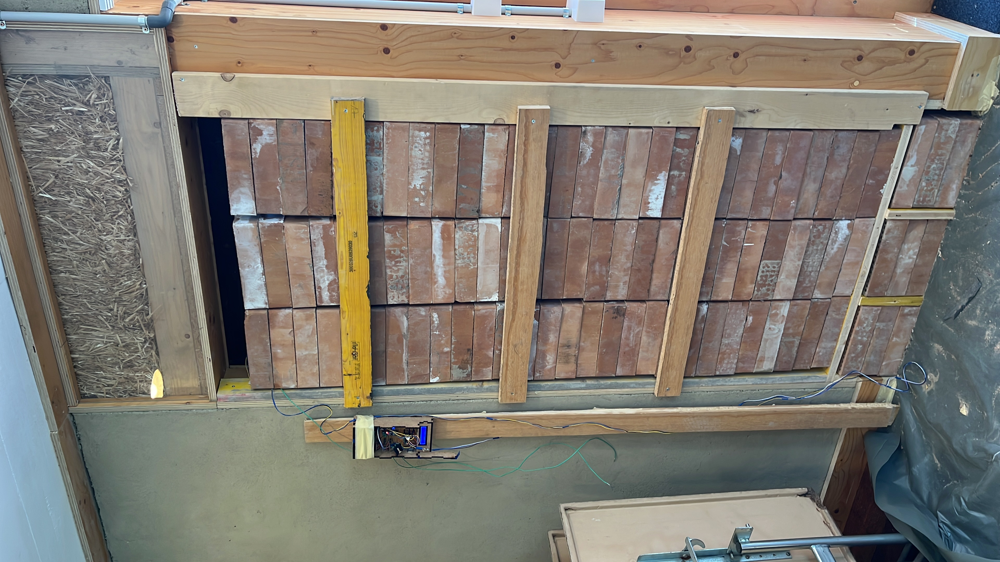
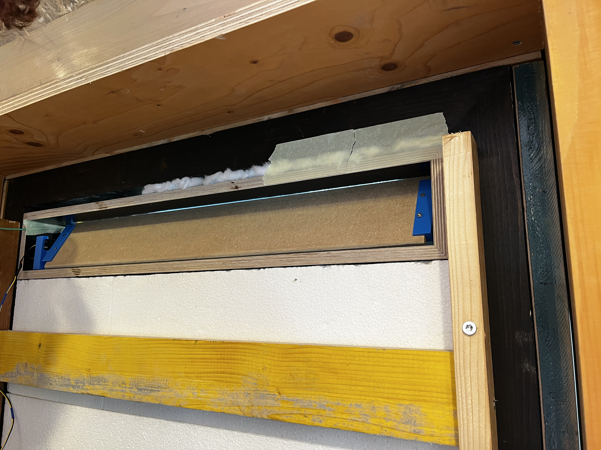
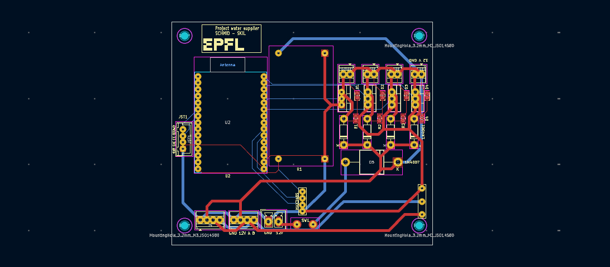
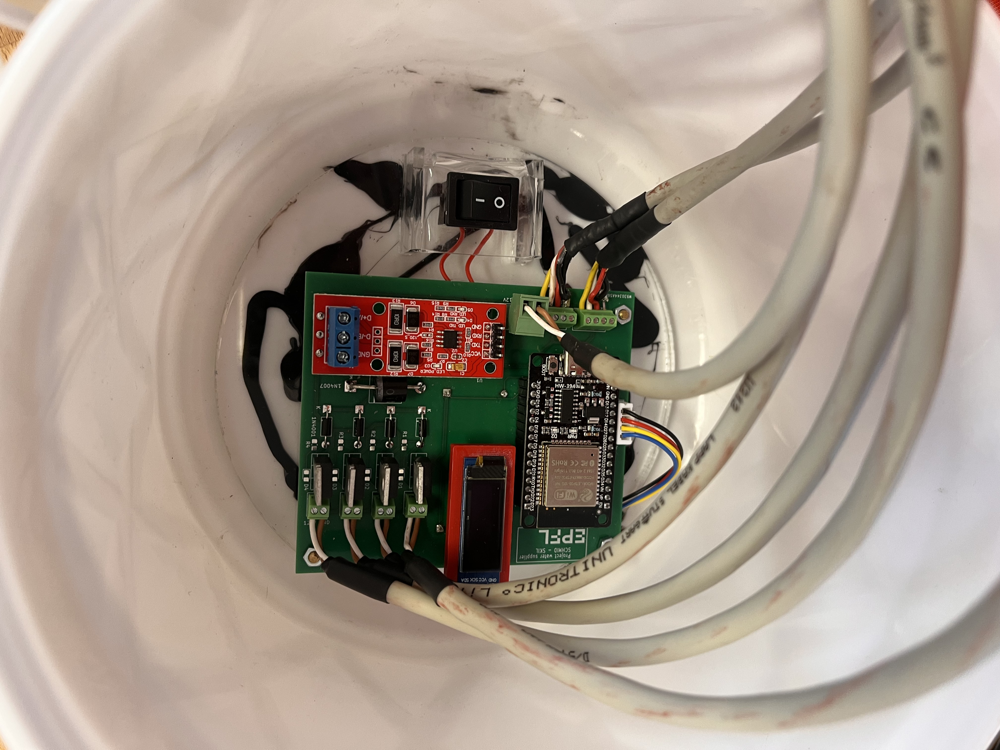
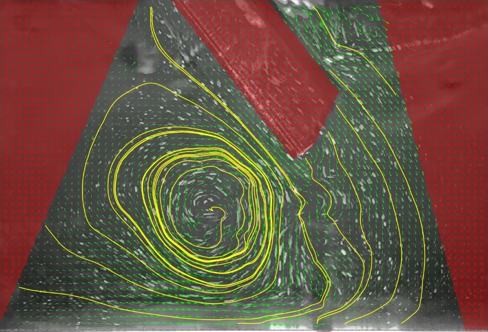
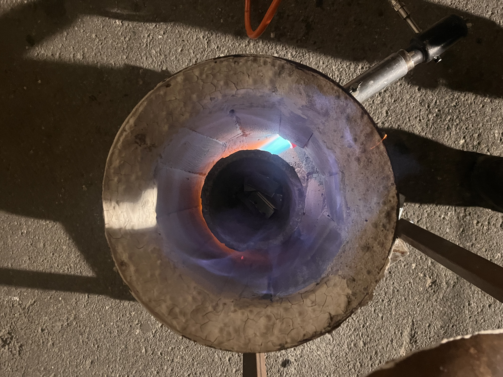
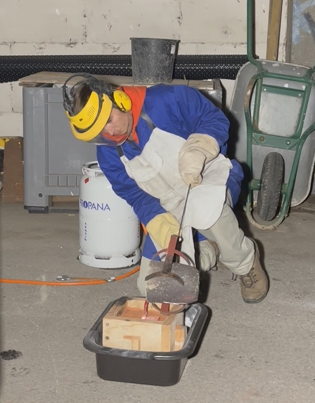
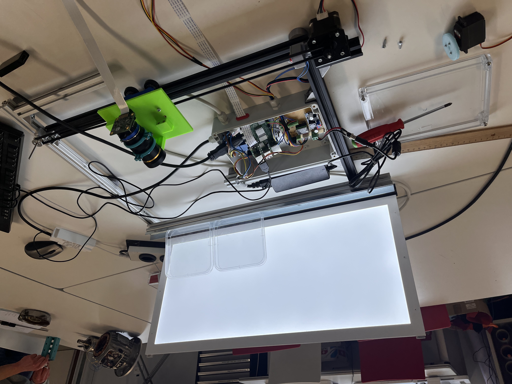
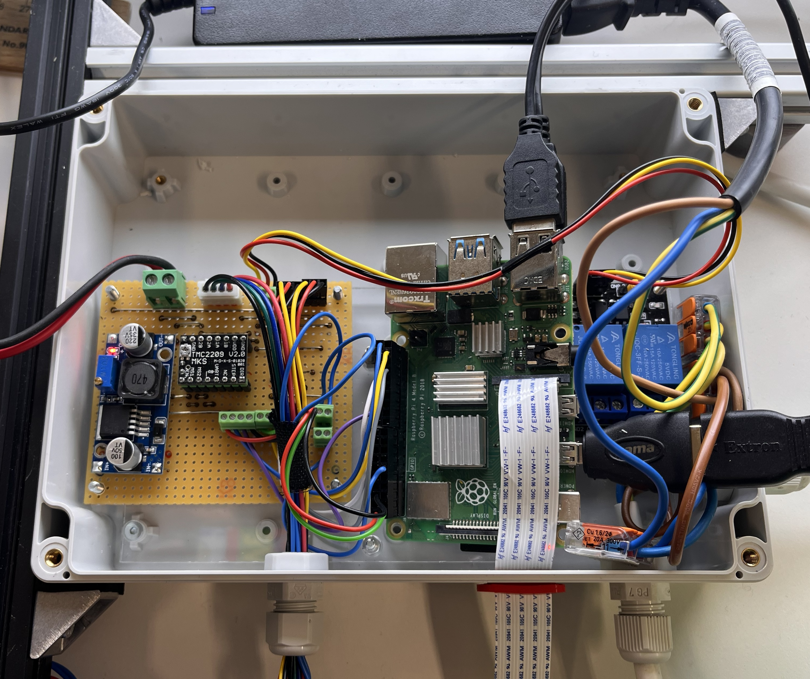

Montage de l'ossature bois du pavillon en chantier participatif.
Construction d'un pavillon en matériaux bio-sourcés et de réemploi.
Participation aux Summer Workshops de construction en paille et d'enduits
en chaux et terre. Pendant l'été 2026, le chantier de déconstruction m'a beaucoup appris sur la façon de construire plus efficacement.
Projet de Bachelor, Génie mécanique EPFL · Printemps 2025 · Chef de projet

Mur Trombe du pavillon RebuiLT. Qualitativement, le flux d'air chaud entre dans le bâtiment si sa température est supérieure à ce dernier.
Dans le cas contraire, il est bloqué par les volets pour éviter une surchauffe. Une masse thermique en briques vient lisser la courbe de restituation de la chaleur.

Détail du volet de régulation de l'ouverture supérieure.
Reprise du mur Trombe instalé sur le pavillon RebuiLT : direction
d'un projet de Bachelor en équipe de quatre visant à en optimiser le fonctionnement
thermique, supervisé par Matteo Bevione et Giulia Tagliabue.
Carte PCB contrôle du système d'arrosage
Atelier SKIL, EPFL · 2026 · Concepteur et réalisateur

PCB routé deux faces — alimentation 12 V, deux capteurs d'humidité et température, trois sorties électrovannes, une pompe.

La carte assemblée, câblée et mise en boîtier.
Comment arroser ses plantes en vacances ? L'automatisation est une solution fiable. J'ai développé un PCB sur KiCad qui commande des ouvertures en fonction de la plante à arroser, et de ses données d'humidité et température.
Banc d'essai pour générer des vagues et mesurer le champ de vitesse.

Champ de vitesse reconstruit : lignes de courant et vecteurs calculés sur MATLAB superposés à l'image brute.
Conception et mise en œuvre du montage expérimental PIV dans le cadre du cours Measurement Techniques,
supervisé par la Prof. Karen J. Mulleners : nappe laser, caméra
synchronisée, moteurs de positionnement, en charge de l'aspect
hardware du dispositif.
Construction d'une fonderie
Y-Fablab, Yverdon-les-Bains · 2024-2025 · Concepteur et réalisateur

La fonderie en fonctionnement. La buse décalée permet à la flamme de s'enrouler dans la chambre.

Coulée de bronze dans un moule.
Au départ, je voulais réparer une pièce de transmission pour un blender. J'ai pensé à construire une fonderie pour la couler.
Je me suis beaucoup renseigné, lu et regardé de vidéos pour arriver à un design simple de fonderie à gaz.
Amélioration d'un dispositif de photographie de boîtes de Petri
Atelier SKIL, EPFL · 2026 · Responsable hardware

Caméra avec déplacement par courroie. Rétroéclairage et photographie contrôlé par un Raspberry Pi 4.

Boîte étanche avec Veroboard et Raspberry Pi 4.
Reprise et amélioration d'un projet existant de photographie
automatisée de boîtes de Petri pour le laboratoire PAL (ENAC).
Responsable de l'aspect hardware et de l'installation du logiciel,
dont le développement a été assuré par d'autres membres de l'équipe.
Rôles
Depuis 2025
Assistant-étudiant, atelier SKIL — EPFL
Aide aux étudiants dans la réalisation de leurs projets de cours :
conception, prototypage, introduction aux machines. Transmission de notions
techniques et accompagnement individualisé, spécialement sur la découpe laser et la couture.
Depuis 2023
Membre du comité et webmaster, Y-Fablab — Yverdon-les-Bains
Association de promotion et de démocratisation des technologies.
Actif dans les groupes menuiserie et soudure, animation d'ateliers
pédagogiques et pratiques. Développement et entretien du site web.
Savoir-faire
Métal
Soudure, forge, fonderie, machines-outils
Bois et textile
Machines de menuiserie, couture de sac en bâche de camion
Construction
Paille porteuse, enduits en chaux, matériaux de réemploi
Électronique
KiCad, schéma et routage de cartes, microcontrôleurs ESP32
Conception
Fusion 360, dessin technique, prototypage
Calcul
Matlab, programmation
Langues — français (maternelle), allemand et anglais (maîtrise),
suisse allemand (bonnes connaissances), italien (notions).
Formation
2025 —
Master en Génie mécanique — EPFL
2022 — 2025
Bachelor en Génie mécanique — EPFL
2019 — 2022
Maturité bilingue, option maths-physique
Gymnase de Frauenfeld (TG) et Gymnase d'Yverdon (VD)
Collaborer
Ouvert aux projets de construction, aux mandats d'atelier et aux
collaborations autour du réemploi et des matériaux bio-sourcés.